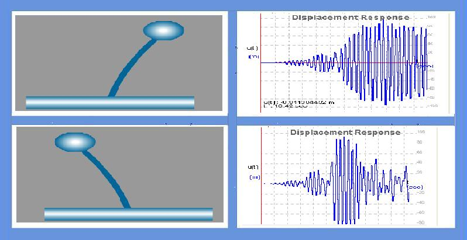
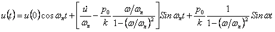
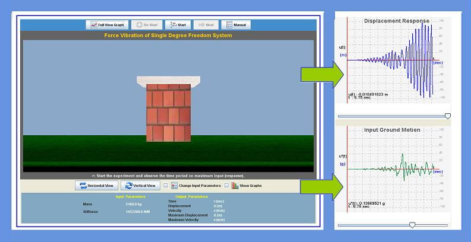

Forced vibration is the one in which external energy is added to the vibrating system. The amplitude of a forced-undamped vibration would increase over time until the mechanism was destroyed. The amplitude of a forced-damped vibration will settle to some value where the energy loss per cycle is exactly balanced by the energy gained.
Examples of this type of vibration include a structure subjected to vibrating machines, vibration of a building during an earthquake or under the action of wind, etc.


Forced vibration is of two types:
1. undamped forced vibration
2. damped forced vibration
Undamped forced vibration :
The differential governing equation for system without damping is
mü + ku = posinωt
where, m = mass; ü = acceleration; k = stiffness; u = displacement; ωn= natural frequency; po= amplitude of force.
Solution of the given equation is


To understand the behavior of the single degree of freedom system when time varying force i.e ground motion is applied.



Observation 1: Effect of time period on maximum response
1. Run the experiment with default ground motion and building parameters
2. Observe the response and note down the maximum response.
3. Repeat the experiment by changing the values of mass of the structure. (Note: Change in mass will change the time period of the structure)
4. Note the maximum response.
5. Plot the graph between the maximum response and the time period of the structure.
Observation 2: Effect of resonance without damping
6. Select Resonance from the list of earthquakes. And set damping to Zero
7. Run the experiment and note the displacement.
8. Response value increases and reaches peak when forcing frequency is nearing natural frequency of the structure.
9. Draw the plot between maximum response and frequency ratio.
Go to Manual view on Forced Vibration of S.D.O.F system(Click here)

Q1.
Amplitude of forced vibration depends on initial conditions.
True
False
Q2.
We get peak response when structure is forced to vibrate at its natural frequency.
True
False
Q3.
Amplitude of vibration increasing when frequency ration if greater than 1.
True
False
Q4.
Maximum response of the structure will be different for different earthquakes.
True
False
Q5.
Undamped structure will become unstable if it is vibrating at resonating frequency.
True
False

Procedure for the experiment is as follows.

- “F.P. Beer and E.R. Johnson, Vector Mechanics for Engineers: Dynamics”, McGraw-Hill, 2004.
- “Dynamics of structures” by Anil K chopra.
- “W.T. Thomson, Theory of Vibration with Applications”, Prentice Hall, 1993.
- “R.F. Steidel, Jr., An Introduction to Mechanical Vibration”, John Wiley, 1989.